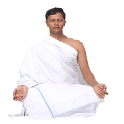

પ્રાણાયામ
પ્રાણાયામ એ પ્રાણ ઉપર સંપૂર્ણ કાબુ રાખવાનું વિજ્ઞાન છે. પ્રાણાયામ શબ્દ પ્રાણ તથા આયામ એ બે શબ્દોનો બનેલો છે. પ્રાણ આત્મા તરીકે ઓળખાય છે. જ્યારે એ શરીરમાં હોય છે. ત્યારે શરીર તથા ઇન્દ્રિયોના પિંજરનો અધ્યક્ષ બને છે, ત્યારે તે જીવ કહેવાય છે. અને જીવ તરીકે કર્મફળ સાથે સંબંઘ ઘરાવે છે.